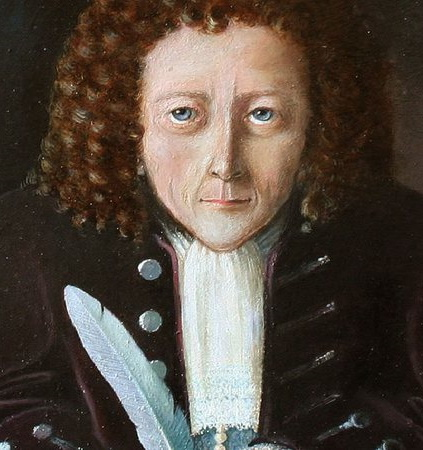

Albert Einstein
Einstein nasceu em 14 de março de 1879, em Ulm, Württemberg, Alemanha. Einstein cresceu em uma família judia secular.
Albert Einstein foi um matemático e físico alemão que desenvolveu as teorias geral e especial da relatividade. Em 1921, ele ganhou o Prêmio Nobel de Física por sua explicação sobre o efeito fotoelétrico. Na década seguinte, ele
emigrou para os Estados Unidos depois de ser alvo do Partido Nazista Alemão.
Seu trabalho também teve um grande impacto no desenvolvimento da energia atômica. Em seus últimos anos, Einstein se concentrou na teoria do campo unificado. Com sua paixão pela investigação, Einstein é geralmente considerado o
físico mais influente do século XX.
Em 1921, Einstein ganhou o Prêmio Nobel de Física por sua explicação sobre o efeito fotoelétrico, já que suas ideias sobre a relatividade ainda eram consideradas questionáveis. Ele não recebeu o prêmio até o ano seguinte devido
a uma decisão burocrática, e durante seu discurso de aceitação, ele ainda optou por falar sobre
relatividade.
Einstein morreu em 18 de abril de 1955, aos 76 anos, no University Medical Center em Princeton. No dia anterior, enquanto trabalhava em um discurso para homenagear o sétimo aniversário de Israel, Einstein sofreu um aneurisma da
aorta abdominal.
Ele foi levado ao hospital para tratamento, mas recusou a cirurgia, acreditando que ele havia vivido sua vida e estava contente em aceitar seu destino. “Eu quero ir quando eu quiser”, afirmou na época. "É de mau gosto prolongar
a vida artificialmente. Fiz minha parte, é hora de ir. Farei isso com elegância."
Isaac Newton
Newton nasceu em 4 de janeiro de 1643, em Woolsthorpe, Lincolnshire, Inglaterra. Usando o "antigo" calendário juliano, a data de nascimento de Newton às vezes é exibida como 25 de dezembro de 1642.
Isaac Newton foi um físico e matemático que desenvolveu os princípios da física moderna, incluindo as leis do movimento, e é considerado uma das grandes mentes da Revolução Científica do século XVII .
Entre 1665 e 1667, Newton voltou para casa do Trinity College para prosseguir seus estudos particulares, pois a escola foi fechada devido à Grande Peste. Diz a lenda que, nessa época, Newton experimentou sua famosa inspiração da
gravidade com a queda da maçã. De acordo com esse mito comum, Newton estava sentado sob uma macieira quando uma fruta caiu e o atingiu na cabeça, inspirando-o a de repente apresentar a teoria da gravidade.
Embora não haja evidência de que a maçã realmente atingiu Newton na cabeça, ele viu uma maçã cair de uma árvore, o que o levou a se perguntar por que ela caiu direto e não em ângulo. Consequentemente, ele começou a explorar as
teorias do movimento e da gravidade.
Em 1687, ele publicou seu trabalho mais aclamado, Philosophiae Naturalis Principia Mathematica (Princípios matemáticos da filosofia natural) , que foi considerado o livro mais influente de física. Em 1705, ele foi nomeado
cavaleiro pela Rainha Anne da Inglaterra, tornando-o Sir Isaac Newton.
Quando chegou aos 80 anos, Newton estava com problemas de digestão e teve que mudar drasticamente sua dieta e mobilidade.
Em março de 1727, Newton sentiu fortes dores no abdômen e desmaiou, para nunca mais recuperar a consciência. Ele morreu no dia seguinte, em 31 de março de 1727, aos 84 anos.
Robert Hooke

Fonte: Wikimedia
Robert Hooke nasceu na cidade de Freshwater, na Ilha de Wight, na Inglaterra, em 18 de julho de 1635.
O cientista Robert Hooke foi educado em Oxford e passou sua carreira na Royal Society e no Gresham College. Suas pesquisas e experimentos variaram da astronomia à biologia à física; ele é particularmente conhecido pelas observações
que fez usando um microscópio e pela "Lei de Hooke" da elasticidade.
A publicação mais importante de Hooke foi Micrographia , um volume de 1665 que documentou experimentos que ele fez com um microscópio. Neste estudo inovador, ele cunhou o termo "célula" ao discutir a estrutura da cortiça.
Ele também descreveu moscas, penas e flocos de neve, e identificou corretamente os fósseis como restos de coisas que já viveram.
A publicação de 1678 das Lectures of Spring de Hooke compartilhou sua teoria da elasticidade; no que veio a ser conhecido como "Lei de Hooke", ele afirmou que a força necessária para estender ou comprimir uma mola é proporcional
à distância dessa extensão ou compressão. Em um projeto relacionado em andamento, Hooke trabalhou por muitos anos na invenção de um relógio regulado por mola.
A carreira de Hooke foi marcada por discussões com outros cientistas proeminentes. Freqüentemente lutou com o colega inglês Isaac Newton , incluindo uma disputa em 1686 sobre a possível influência de Hooke no famoso livro de Newton Principia Mathematica .
Em seu último ano de vida, Hooke sofreu de sintomas que podem ter sido causados pelo diabetes. Ele morreu com 67 anos em Londres em 3 de março de 1703.
George Simon Ohm
Georg Simon Ohm (1787-1854) nasceu em Erlangen, na Baviera, no Sudeste da Alemanha, no dia 16 de março de 1787. Simon foi um físico e matemático alemão que definiu o novo conceito de resistência elétrica. Sua formulação matemática
é conhecida como "Lei de Ohm". Em 1827, com 40 anos de idade, Georg Ohm publicou um trabalho intitulado: “Medidas Matemáticas de Correntes Elétricas”.
Em vez de encontrar o reconhecimento que achava justo, o trabalho foi simplesmente ignorado na época. Os que leram não entenderam e acharam que não havia nenhuma contribuição para a Ciência e a Matemática. O professor que esperava
uma promoção como resultado de sua publicação, entrou com uma discussão no Ministério da Cultura e acabou perdendo o emprego.
O artigo, que definiu um novo conceito de resistência elétrica, foi despercebido na época. Nele, Ohm relatava suas experiências com diferentes espessuras e comprimentos de fios e as descobertas das relações matemáticas envolvendo essas
dimensões as grandezas elétricas. Inicialmente verificou que a intensidade da corrente era diretamente proporcional à área da seção do fio e inversamente proporcional ao seu comprimento.
Georg Simon Ohm conseguiu formular um enunciado que envolvia além dessas grandezas a diferença de potencial: “A intensidade da corrente elétrica que percorre um circuito aumenta proporcionalmente ao aumento da força eletromotriz e
decresce proporcionalmente ao aumento da resistência”. É quase a expressão de uma lei universal – quanto maior o trabalho a realizar, maior o esforço que temos de fazer para realizá-lo. Sua formulação matemática é conhecida como
Lei de Ohm.
Após sua morte, na reunião do Congresso Internacional de Engenheiros Eletricistas em Paris, em 1881, decidiu-se dar o nome de Ohm à unidade de resistência elétrica. O alemão foi quem demonstrou a relação entre as três grandes unidades
de eletricidade, o ampère, o volt e o ohm.
Georg Simon Ohm faleceu em Munique, na Alemanha, no dia 6 de julho de 1854.